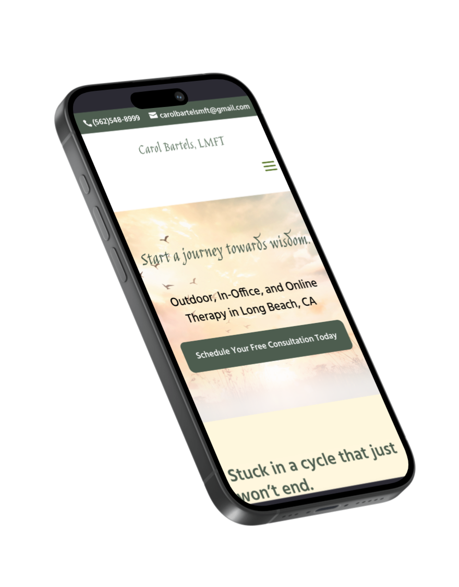
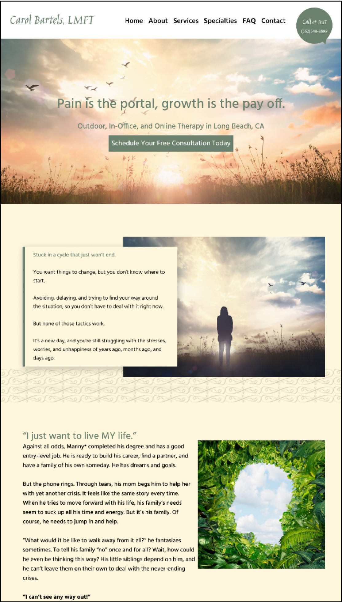
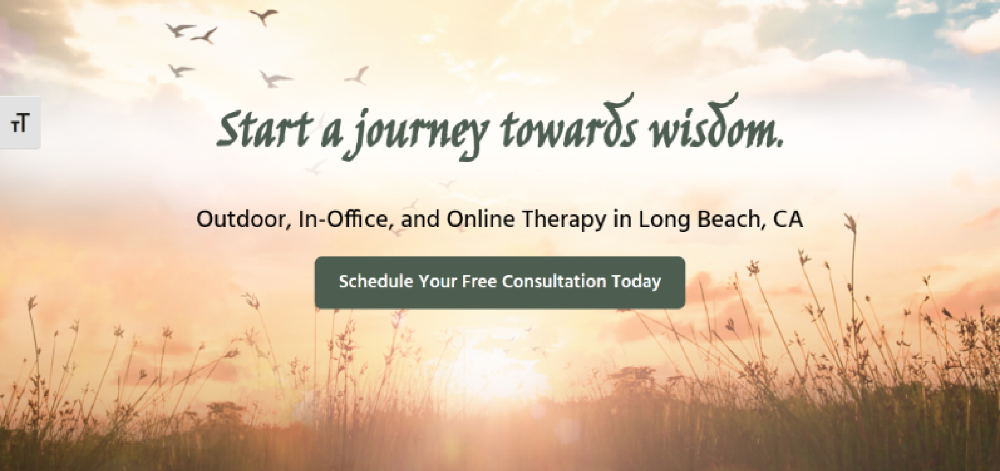
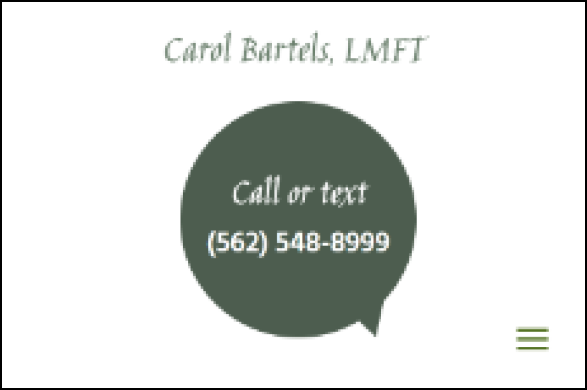
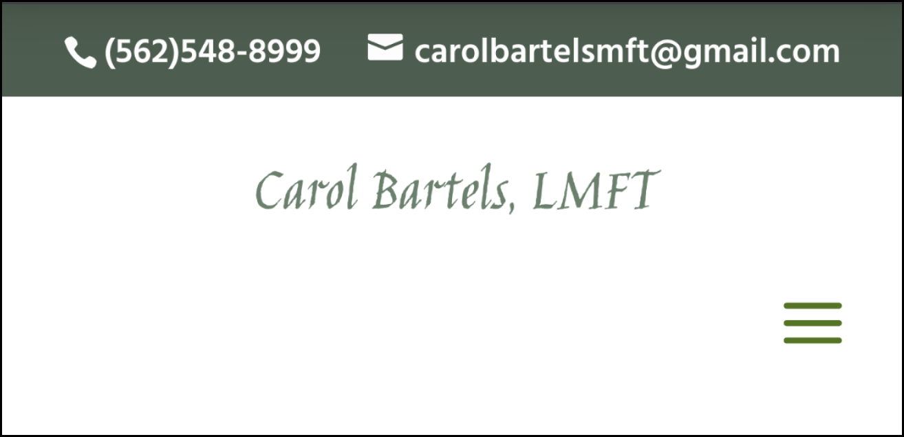
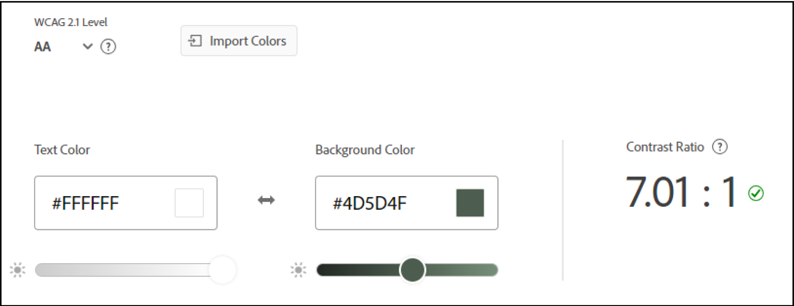
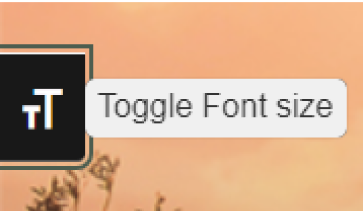

<!DOCTYPE html>
<html lang="en">
  <head>
    <meta name="viewport" content="width=device-width, initial-scale=1" />
    <title>Erin Lauderdale's Portfolio</title>
    <link rel="stylesheet" type="text/css" href="css/new.css" />
    <link rel="preconnect" href="https://fonts.googleapis.com" />
    <link rel="preconnect" href="https://fonts.gstatic.com" crossorigin />
    <link
      href="https://fonts.googleapis.com/css2?family=Josefin+Sans:ital,wght@0,100..700;1,100..700&display=swap"
      rel="stylesheet"
    />
    <link
      href="https://fonts.googleapis.com/css2?family=Afacad+Flux:wght@100..1000&display=swap"
      rel="stylesheet"
    />
    <script defer src="JS/newmenu.js"></script>
    <script defer src="JS/smoothscroll.js"></script>
    <script defer src="JS/csslider.js"></script>
    <script defer src="JS/backtotop.js"></script>
  </head>
</html>
<body>
  <!-- HEADER & MENU
       -------------------------------------------------------------- -->
  <section id="NAV">
    <div class="desktop-header">
      <div class="logo">
        <a href="index.html" aria-label="Home"
          ></a>
      </div>
      <ul class="menu">
        <li>
          <a href="about.html">
            <h2 class="menu-text">About</h2>
            <div class="menu-item"></div
          ></a>
        </li>

        <li>
          <a href="work.html">
            <h2 class="menu-text">Work</h2>
            <div class="menu-item"></div>
          </a>
        </li>
        <li>
          <a href="contact.html">
            <h2 class="menu-text">Contact</h2>
            <div class="menu-item"></div
          ></a>
        </li>
      </ul>
    </div>

    <div class="mobile-header-cont">
      <div class="mobile-header">
        <div class="logo">
          <a href="index.html" aria-label="Home"
            ></a>
        </div>
        <div class="hamburger">
          
        </div>
      </div>
      <div class="mobile-menu">
        <div class="mm-item">
          <a href="about.html">
            <h2>About</h2>
          </a>
        </div>

        <div class="mm-item">
          <a href="work.html">
            <h2>Work</h2>
          </a>
        </div>
        <div class="mm-item">
          <a href="contact.html">
            <h2>Contact</h2>
          </a>
        </div>
      </div>
    </div>
  </section>

  <!-- ------- -->
  <div class="page-content">
    <div class="inner-content">
      <div class="mobile-margin">
        <a href="work.html">
          <button class="g-circle-btn">
            </button
        ></a>
      </div>
      <div class="cs-mockups">
        
        
      </div>
      <div class="page-header"></div>
      <div class="mobile-margin">
        <h1>Making Eco-Therapy Accessible</h1>
      </div>
      <div class="y-box"></div>
      <div class="mobile-margin top-pad">
        <h3 class="p-highlight">
          Web Accessibility Redesign: Carol Bartels, LMFT
        </h3>
        <div class="content-column justify-center top-pad bottom-pad">
          <h4>Challenge</h4>
          <p>
            Carol Bartels, LMFT is an eco-therapist that primarily finds clients
            through online marketing. However, her site did not meet WCAG
            accessibility standards and was not providing the user experience
            she wanted for her clients. My challenge was to work with the
            original design to improve accessibility, enhance the user
            experience, and simplify the process to contact Carol about therapy.
          </p>
          <h4>Process</h4>
          <ul>
            <li>
              Performed a heuristic analysis to determine what pain points
              existed
            </li>
            <li>
              Worked with my client to edit the written content of the site down
            </li>
            <li>
              Used the existing design to create a new, accessible color palette
            </li>
            <li>
              Worked within WordPress to make sure the site was accessible for
              keyboard and screen reader users
            </li>
            <li>Added new content as requested by my client</li>
          </ul>
          <h4>Outcome</h4>
          <p>
            Since launching the redesign, my client has received up to 30% more
            contact form responses than prior to the redesign. She chooses not
            to track site analytics, but reports more engagement from her web
            presence and is satisfied with the new state of her website.
          </p>
          <div class="content-column center-align">
            <a href="https://carolbartelslmft.com/" target="_blank">
              <button class="g-btn fit">
                
                View the Website
              </button></a
            >
          </div>
        </div>
        <div class="mobile-spacer">
          <div class="p-circle-sm"></div>
          <div class="p-circle-sm"></div>
          <div class="p-circle-sm"></div>
        </div>
        <div class="content-row justify-even">
          <a href="#INIT">
            <button class="g-btn fit">
              
              Analysis
            </button></a
          >
          <a href="#DEF">
            <button class="g-btn fit">
              
              Design Proces
            </button></a
          >
          <a href="#ACC">
            <button class="g-btn fit">
              
              Accessibility
            </button></a
          >
          <a href="#CONC">
            <button class="g-btn fit">
              
              Conclusion
            </button></a
          >
        </div>
      </div>
      <section class="cs-sec" id="INIT">
        <div class="page-header"></div>
        <div class="mobile-margin">
          <h2>Analysis</h2>
        </div>
        <div class="y-box-cs"></div>
        <div class="content-column mobile-margin">
          <p>
            My process began by analyzing the existing state of my client’s
            website and identifying what needed to be changed. I started with a
            basic heuristic analysis, where I identified pain points and
            inaccessible features. I also assisted my client with editing down
            the site content at this point, which laid the groundwork to
            implement my new design.
          </p>

          <div class="content-row center-align bottom-pad">
            <div class="cs-img heuristic">
              
            </div>
            <div class="content-column cs-desc">
              <div class="perm-row center-align">
                
                <h3>Heuristic Analysis</h3>
              </div>
              <p>
                I began by doing a heuristic analysis on the original site to
                determine what would need to be changed. My client was primarily
                focused on redesigning the homepage, so I started there. The
                main issues were determined to be keyboard accessibility, large
                blocks of text that needed to be edited down, and some
                inconsistent styling. The initial points I found included:
              </p>
              <ul>
                <li>Drop down menus were not keyboard accessible</li>
                <li>
                  Green accent color is too light against photo background
                </li>
                <li>
                  Too many large blocks of text that do not serve the user
                </li>
                <li>The call-to-action buttons did not stand out</li>
                <li>
                  The client stories were disjointed and in an inaccessible tab
                  box
                </li>
                <li>The headings were not consistently in a single font</li>
              </ul>
              <p>
                These, plus insight from my client on what she wanted changed,
                gave me many actionable items to work on as I began the redesign
                process.
              </p>
            </div>
          </div>
        </div>
      </section>

      <section class="cs-sec" id="DEF">
        <div class="page-header"></div>
        <div class="mobile-margin">
          <h2>Design Process</h2>
        </div>
        <div class="y-box-cs"></div>

        <!-- SLIDER -->
        <div class="content-column center-align justify-center">
          <div class="cs-slider">
            <div class="cs-slide csslide-1">
              <div class="slider-img bottom-pad">
                
              </div>

              <h4 class="p-highlight">Hero</h4>
              <p>
                The homepage hero provides the user with the first impression of
                the website. I worked with my client to create a positive,
                affirming tagline that would encourage potential clients to come
                work with her. I changed the font to match the other headers and
                altered the shade of green used to provide higher text contrast.
              </p>
            </div>

            <div class="cs-slide csslide-2">
              <div class="slider-img bottom-pad">
                
              </div>

              <h4 class="p-highlight">Client Stories</h4>
              <p>
                The initial homepage design broke the client stories up into two
                sections, an introduction and resolution within the tabs. It
                felt disconnected, so we decided to combine the stories into a
                singular section within the tabs. I added a photo background to
                match the style of other homepage sections, and emphasized the
                header to provide the user with context.
              </p>
            </div>
            <div class="cs-slide csslide-3">
              <div class="slider-img bottom-pad">
                
              </div>

              <h4 class="p-highlight">Repetitive Content</h4>
              <p>
                The about section of the initial homepage had large chunks of
                content that was then repeated on the linked page. To improve
                user experience and cut down on text content on the homepage, I
                worked with my client to shorten the introduction to one
                paragraph and moved the button under the content to make the
                continuation more clear.
              </p>
            </div>

            <div class="cs-slide csslide-4">
              <div class="slider-img cs-iter bottom-pad">
                
              </div>

              <h4 class="p-highlight">Media Page</h4>
              <p>
                My client has recently been featured in a number of articles and
                interviews and wanted a media page to reflect those on her
                website. I worked within the constraints of the existing design
                system to create an easy-to-use page that clearly displayed each
                item. I designed it so that it would be easy to update as new
                articles are written, as well.
              </p>
            </div>

            <div class="cs-slide csslide-5">
              <div class="content-row bottom-pad">
                <div class="slider-img">
                  
                </div>
                <div class="slider-img">
                  
                </div>
              </div>

              <h4 class="p-highlight">Responsive Design</h4>
              <p>
                Largely, the site looked good and performed well on mobile. The
                only piece my client was not satisfied with was the header,
                which displayed a widget that was out of proportion. I changed
                the widget to a top banner across all sizes, which kept the
                design consistent without compromising the purpose of the
                widget. My client was much happier with this solution and the
                site is now easier to navigate on mobile devices.
              </p>
            </div>
          </div>
        </div>

        <div class="cs-slider-btns">
          <button class="pslider-btn slider-btn-left">
            
          </button>
          <button class="pslider-btn slider-btn-right">
            
          </button>
        </div>
        <div class="cs-slider-thumbnails center-align justify-center">
          <div class="slider-thumb thumb-1">
            
          </div>
          <div class="slider-thumb thumb-2">
            
          </div>

          <div class="slider-thumb thumb-3">
            
          </div>

          <div class="slider-thumb thumb-4">
            
          </div>
          <div class="slider-thumb thumb-5">
            
          </div>
        </div>

        <!-- END SLIDER -->
      </section>
      <section class="cs-sec" id="ACC">
        <div class="page-header"></div>
        <div class="mobile-margin">
          <h2>Accessibility</h2>
        </div>
        <div class="y-box-cs"></div>
        <div class="content-column mobile-margin">
          <p>
            My client’s main goal for her website redesign was to comply to
            accessibility standards. I focused on ensuring the website was
            visually accessible, usable though keyboard interactions, and passed
            an accessibility checker. Most of the changes made were minimal to
            the overall design, but made the site more usable, especially for
            those with disabilities.
          </p>

          <div class="content-row">
            <div class="content-column cs-desc">
              <div class="perm-row center-align">
                
                <h3>Color Accessibility</h3>
              </div>
              <div class="cs-img cs-iter">
                
              </div>
              <div class="cs-img cs-iter">
                
              </div>
              <p>
                The primary accent color did not pass AA level contrast when
                used as a background for white text. Changing it to a slightly
                darker shade allowed for a better contrast ratio without
                compromising the overall visual design. This also approved the
                appearance of colored text on photo backgrounds and, in my
                opinion, improved the color balance of the design system.
              </p>
            </div>

            <div class="content-column cs-desc">
              <div class="perm-row center-align">
                
                <h3>Skip Buttons</h3>
              </div>
              <div class="cs-img cs-iter">
                
              </div>
              <div class="cs-img cs-iter">
                
              </div>
              <p>
                To allow for simple keyboard navigation, I added skip to content
                and skip to navigation to the top of each page. As the menu
                increased in size, I wanted to give keyboard users an easy way
                to navigate to the content without getting bogged down by having
                to navigate through an excessive number of menu items.
              </p>
            </div>
          </div>

          <div class="content-row">
            <div class="content-column cs-desc">
              <div class="perm-row center-align">
                
                <h3>Font Size Toggler</h3>
              </div>
              <div class="cs-img cs-iter">
                
              </div>
              <p>
                I added a font size toggler under the primary navigation bar.
                This gives users a simple option for visual accessibility
                without relying on their own browser plugins. It does not change
                the size of headings, which are already large enough to be
                accessible to minimize disruptions to the overall intent of the
                design.
              </p>
            </div>
            <div class="content-column cs-desc">
              <div class="perm-row center-align">
                
                <h3>Tabindex</h3>
              </div>
              <div class="cs-img">
                
              </div>
              <p>
                The original theme used for the site did not include keyboard
                accessibility features for all of the blocks. I manually added
                tabindex elements to the tab box and buttons to make the site
                usable by keyboard. I replaced elements where this was not
                possible with alternatives.
              </p>
            </div>
          </div>
        </div>
        <!-- END ITERATION HIGHLIGHT -->
      </section>
      <section class="cs-sec" id="CONC">
        <div class="page-header"></div>
        <div class="mobile-margin">
          <h2>Conclusion</h2>
        </div>
        <div class="y-box-cs"></div>

        <div class="content-row center-align top-pad bottom-pad mobile-margin">
          <div class="content-column justify-center center-align">
            <div class="cs-img">
              
            </div>
            <button class="g-btn">
              <a href="https://carolbartelsmft.com/" target="_blank"
                ><div class="perm-row center-align justify-center">
                  View the Website
                </div></a
              >
            </button>
          </div>
          <div class="content-column">
            <div class="perm-row center-align">
              
              <h3>Results</h3>
            </div>
            <p>
              The site is now significantly more accessible and has a more
              polished feel. My client is happy with the changes and has gotten
              positive feedback about the website from clients. Since launching
              the redesign, my client:
            </p>
            <ul>
              <li>
                Has received up to 30% more contact form submissions per month
              </li>
            </ul>
          </div>
        </div>

        <div class="content-column mobile-margin">
          <div class="perm-row center-align">
            
            <h3>Final Thoughts</h3>
          </div>

          <p>
            Overall, I’m happy with my work on this project. I had the
            opportunity to revisit my work after a year and reflected on the
            skills I’ve gained in that time. I have become much more familiar
            with WordPress and was able to advise my client on a handful of
            performance improvements during my second pass. I was also able to
            identify a couple of accessibility improvements I had missed the
            first time, such as unreadable text against a photo background and
            missing alt text. If I had more time to continue working on the
            site, I would:
          </p>
          <ul>
            <li>Improve site metadata to optimize SEO results.</li>
            <li>
              Discuss a design system redesign, modernize brand colors and
              fonts.
            </li>
            <li>
              Change the base theme to improve accessibility and ease of content
              updates.
            </li>
            <li>Discuss ways to improve site performance with the web host.</li>
          </ul>
          <p>
            I am always looking to improve my skills and am happy to recognize
            that time has given me the opportunity to do so. I hope to continue
            this trend of improvement as I work on new projects!
          </p>
        </div>

        <div class="return hidden">
          <a href="#NAV">
            <button class="g-circle-btn">
              </button
          ></a>
        </div>
      </section>
      <div class="content-column justify-center center-align">
        <div class="cta-end g-shadow">
          <div class="content-column justify-center center-align">
            <h4>Like what you see?</h4>
            <button class="g-btn">
              <a href="contact.html"> Contact me! </a>
            </button>
          </div>
        </div>
      </div>
    </div>
  </div>
</body>
